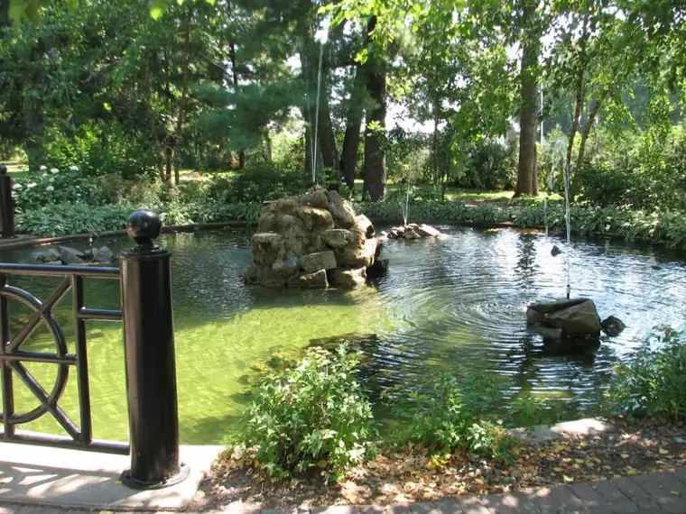

My intent in seeking a summer writing residency had, at first, everything to do with needing to finish an invovled writing project that required focused attention 
{kind=link}
Now, nearly at the end of this wonderful retreat, I am fully aware of the dual purpose in this getaway that has everyone a winner. My in-laws have expressed their joy in being able to spend time with our children, helping them bond more fully with their little cousins, introducing them to lake life in a way they had not experienced before, and watching their day-to-day exchanges and personalities away from parental influence. I knew when we moved closer to family shortly after the birth of our first child that in drawing nearer to grandparents, we would be offering our child a chance to develop relationships with extended family separate from (though still connected to) his relationship and life with us. It does my heart good to see, from a distance, these things come to pass. So while I soak in the wonder of a peaceful atmosphere here, my children have been allowed a reprieve as well. We are all on hiatus from one another and everyone gains. Tonight, my oldest will go to a baseball game with his father, just the two of them. I delight in all of these experiences my children and husband and in-laws are having in my absence. There are seasons in our lives as parents when getting away is difficult, if not impossible, but when possible, it is imperative we grab those opportunities to refresh ourselves for the days when the only escape might be into the bathroom for five minutes with the door closed.
The photo above also has a dual purpose. It allows me to share an image of my week with others, and I can retain that image to bring me back to a time of peace later, when sneaking off will not be an option and the noisiness at home will fill my head with words and needs and familial concerns.
Peace be to all parents out there, no matter where your lives have brought you this week. Wherever and however you might find it, I hope you, too, will have the chance to enjoy a small reprieve before summer’s end.